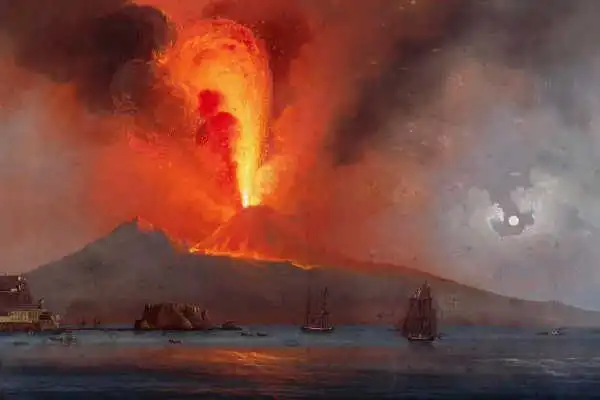
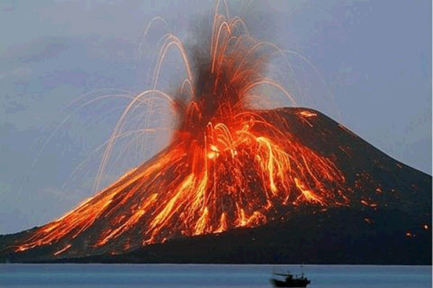
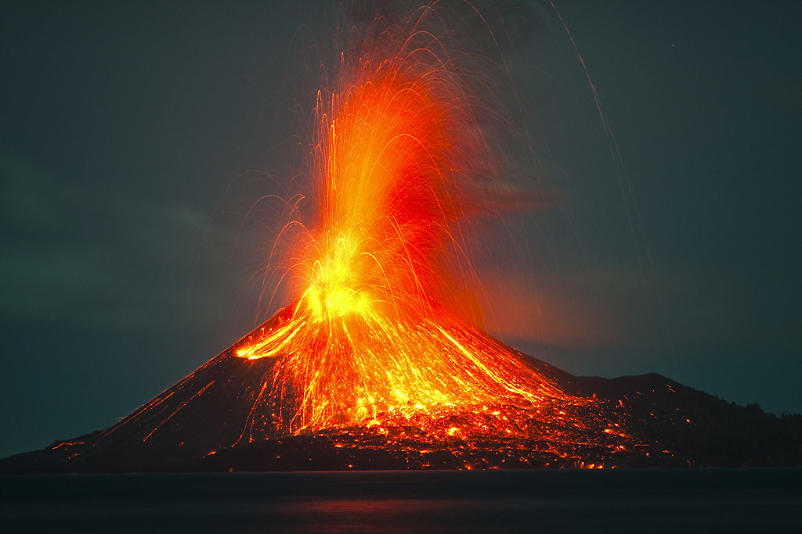
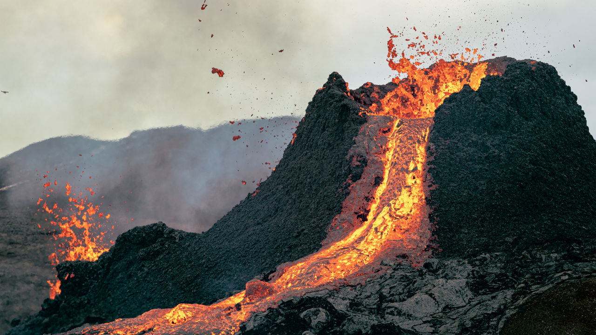
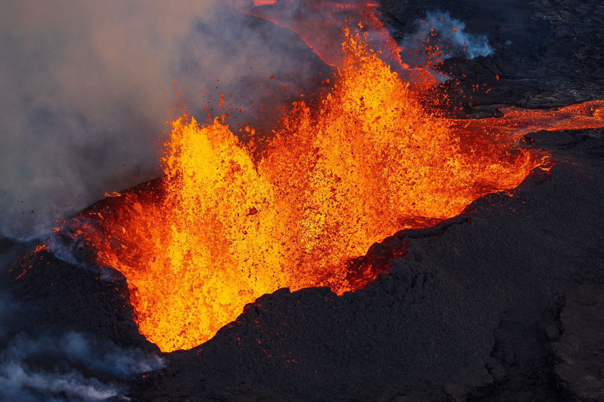
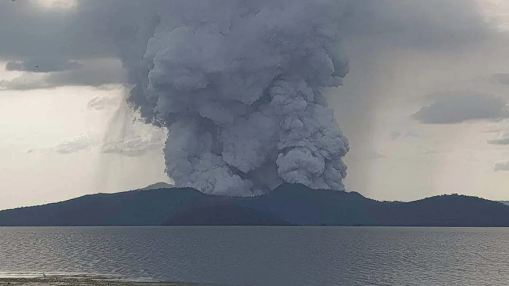

EARTH SCIENCE 9
Teacher: Sir Steven Joel Y. Roquino
Types of Volcanic Eruptions
1. Vesuvian
Vesuvian Eruptions, also called "Plinian" Eruptions, are marked by their similarity to the eruption of Mount Vesuvius in 79 AD, which destroyed the ancient city of Pompeii. The eruption was described in a letter written by Pliny the Younger.
These eruptions produce very thick and viscous lava, along with volcanic ashes and a cauliflower-like cloud. These eruptions can reach the stratosphere, hurling up to 10km into the air. These eruptions are so violent that the magma thrown out from it is so large, that it can cause the volcano to collapse.
2. Strombolian
Strombolian Eruptions are named after the Stromboli Volcano, which is considered the most spectacular volano island of the Aeolian Islands, due to the fact that it erupts every 15 minutes!
Strombolian Eruptions have an impressive display, but are actually not that destructive. The lava from the eruption comes in large blobs and quickly flows down the side in narrow rivers.
3. Vulcanian
Vulcanian Eruptions are named after the Vulcano in North Sicily, which is also called "The mouth of hell."
Vulcanian Eruptions erupt dense clouds of ash and gas in short bursts, along with an explosion of viscous magma that comes in fragments.
4. Pelean
Pelean Eruptions are named after their similarity to the eruption of Mt. Pelee on the carribean island of Martinique in 1902
Pelean Eruptions are associated with explosive outbursts that generate pyroclastic flows, gas, dush, ash and incandescent lava. It is one of the most dangerous types of volcanic eruption.
5. Hawaiian
Hawaiian Eruptions are non-explosive eruptions of lava fountains that generate red-hot lava rivers of very fluid basaltic lavas. Hawaiian Eruptions are typical for shield volcanoes, where eruptions take place both at the summit and at fissure vents.
Hawaiian Eruptions squirt out at a height of 100 meters, producing molten, incandescent, slow and steady lava flow.
6. Phreatic
Phreatic Eruptions are eruptions that occur near wet areas, especially the ocean. These eruptions are made up of steam-driven explosions that occur when water beneath the ground or on the surface is heated by volcanic activity.
A notable example that a lot of filipinos might recognize is the 2020 Eruption of the Taal Volcano.